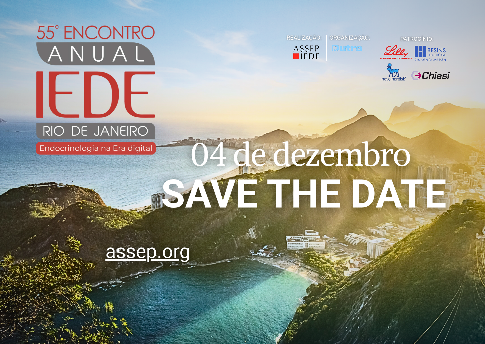

Abertura e conferência de abertura
08:30–08:35
Abertura
Lívia Lugarinho, Karen de Marca e Almar Bastos

Uma visão organizada das principais sessões, palestras e momentos de networking do evento, pensada para facilitar a sua navegação.
Todos os conteúdos abaixo estão apresentados em um formato responsivo, com acesso rápido e leitura confortável em desktop e celular.
